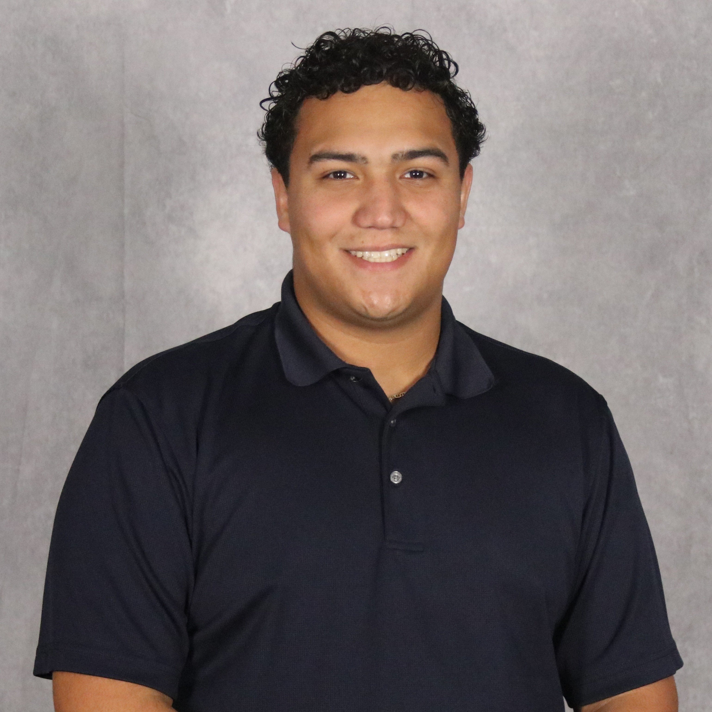

I'm Sebastian Sotomayor
I am a Computer Engineering graduate from the University of Central Florida with a passion for solving problems at the intersection of hardware and software. My experience spans embedded systems, algorithms, and full-stack development, where I've worked with microcontrollers like the MSP430FR6989, developed enterprise simulators in Java, and built applications using both MERN and LAMP stacks. These projects have strengthened my ability to deliver impactful and efficient solutions.
At UCF, I developed a strong foundation in both software and hardware through hands-on projects, coursework, and team-based engineering experiences. Most recently, I worked on the Multi-Adjustable Port Station, a senior design project that combined embedded firmware, Raspberry Pi integration, real-time telemetry, and a full-stack web interface to manage multiple smart charging ports.
Beyond academics and professional experience, I enjoy building projects that combine technical depth with creativity. Inspired by organizations such as Nintendo and Disney, my goal is to design technology driven experiences that are intuitive, engaging, and meaningful whether through software, hardware, or a blend of both.
